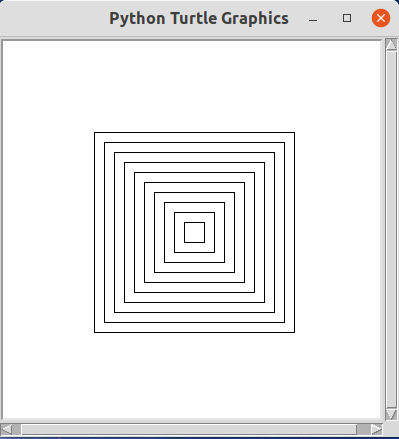

Quiz 测验¶
Time: 2021-07-03 20:00 - 21:30 (GMT-4)
Name:______________________
Score:_____________________
Instruction:
You are allowed to use Internet but not allowed to ask for someone else’s help through Internet. 可以使用互联网，但不能通过互联网寻求他人帮助。
You are allowed to ask for your parents’ help. Your parents may only give you oral direction; he or she cannot write the codes for you directly. 可以寻求爸爸妈妈的帮助，但是爸爸妈妈只能给你口头指导，不能代替你写代码
You need to open your video all the time so that your teacher can see what you are doing. 考试期间全程打开视频让老师知道你在做什么
You may mute yourself. But if you have some questions to ask, you may unmute and talk to your teacher.正常情况下你应该静音，如果你有问题要询问老师，可以取消静音和老师对话。
Once time is up, completely stop, change the file name to “[yourname]_quiz.ipynb” and upload(or email) your file before 9：30. 一旦时间结束，立即停止答题，将文件名修改为“[你的名字]_quiz.ipynb” 上传（或email)你的文件。
Notes:
There are 5 questions. Each worth 20 points. 一共有5道题目，每题20分。
You may modify the codes or add new codes lines following each
#TODOinstruction.你需要遵循#TODO提供的要求来修改现有的代码或新增一行或多行代码。
Question 1¶
Complete the following codes so that the program can:
完成下面的代码使得程序能够：
let the compute wait for your input from keyboard with prompt “Please input a number:”; 让计算机等待来自键盘的输入，给出提示文字:“请输入一个数:”;
type 100 by keyboard; 从键盘输入100;
check the number from keyboard is odd or even, print the result. 检查输入的数是奇数还是偶数，打印出结果
[1]:
variable_input = "101"
# TODO: receive keyboard input with prompt: "Please input a number:"
# 接受来自键盘的输入，提示语句为:"请输入一个数字："
variable = int(variable_input)
if True: # TODO: replace True with a proper conditional expression
# 用一个恰当的条件表达式来替换True
print("{} is even.\n{}是偶数。".format(variable, variable))
else:
print("{} is Odd.\n{}是奇数。".format(variable, variable))
101 is even.
101是偶数。
Question 2¶
Complete the following codes so that the program can:
补全下面的代码使得程序能够：
Randomly generate two integers between 100 and 200(both included);随机生成在100和200之间（包括100和200）的两个整数；
Compute the sum of two integers;计算这两个整数的和；
Compute the difference of the two integers. If two integers are not same, the difference should be the larger integer subtract the smaller one. If two integers are same, use either integer to subtract the other.计算这两个整数的差。如果这两个数不相等，差通过较大的数减去较小的数得出。如果两个数相等，可以使用任意一个整数减去另一个计算差；
Print the results.打印出结果。
[2]:
# TODO: import the method for generate a random integer with certain range
# 从某一个仓库李导入一个可以随即生成一定范围内整数的方法
num1 = 102 # TODO: replace 102 with a method imported. 用一个导入的方法替换102
num2 = 198 # TODO: replace 198 with a method imported. 用一个导入的方法替换198
sum_ = num1 + num2
diff = None
if True: # TODO: replace True with proper conditional expression
# 用恰当的条件表达式替代True
diff = num1 - num2
else:
diff = num2 - num1
print("The integers generated are {} and {}".format(num1, num2))
print("生成的两个整数分别是{}和{}".format(num1, num2))
print("The sum is {}; the difference is {}".format(sum_, diff))
print("他们的和是{};差是{}".format(sum_, diff))
print("Since the difference is calculated by larger integer minus smaller one")
print("由于差是用较大的数减去较小的数得到的")
print("The difference is always greather than or euqal to 0.")
print("这个差总是大于或等于0。")
if diff < 0:
print("::: When you see this output, it says your codes didn't meet the requirements.")
print("::: 当你看到这行输出，说明你的代码不符合要求。")
The integers generated are 102 and 198
生成的两个整数分别是102和198
The sum is 300; the difference is -96
他们的和是300;差是-96
Since the difference is calculated by larger integer minus smaller one
由于差是用较大的数减去较小的数得到的
The difference is always greather than or euqal to 0.
这个差总是大于或等于0。
::: When you see this output, it says your codes didn't meet the requirements.
::: 当你看到这行输出，说明你的代码不符合要求。
Question 3¶
Complete the following codes so that the program find all the factors of 397 and check whether 397 is a prime or a composite:
补全下面的代码使得程序能够找出397的所有因数并且检查397是一个质数还是一个合数：
[3]:
num = 397
factors = [1]
i = 2
while i <= num:
if True: # TODO: replace True with a proper conditional expression.
# 用合适的条件表达式替代True
# TODO: add i to the factors as one of its elements
# 将i添加到factors列表中作为其一个元素
pass
i += 1
factors.remove(1)
result = "unknown"
required_length = 2 # TODO: replace 2 with a correct value
# 用正确的值替换2
if len(factors) > required_length:
result = "a composite" # 一个合数
elif len(factors) == required_length:
result = "a prime" # 一个质数
else:
result = "not a prime, nor a composite" # 既不是质数也不是合数
print("{} is {}.".format(num, result))
397 is not a prime, nor a composite.
Question 4¶
A water container has one inlet and one outlet. If both inlet and outlet are turned on, every second, there will be 5 liters of water flowing into the container and 3 liters of water flowing away from the outlet. The container can store 500 liters of water at most. At the time 0, there are 100 liters of water in the container. If both inlet and outlet are turned on, will the container be completely full after some time? If yes, when will the container be full? If not, why?
一个装水的容器有一个进水口和一个出水口。如果同时把进水口和出水口打开，每秒钟会有5升的水从进水口流入这个容器，同时有3升的水从出水口流出这个容器。已知容器最多可以装500升的水，且在时刻0，容器里已有100升的水。此时把进水口和出水口同时打开，经过一段时间后这个容器是否会装满水？如果是，大概经过多少时间容器会满；如果不是，为什么？
通过补全下面的带来来完成这个问题。
By completing the following codes to answer this question.
in_speed, out_speed = 5, 3
max_water_in_container = 500
cur_water_in_container = 100
time_passed = 0
delta_time = 1
while True:
cur_water_in_container += (in_speed - out_speed) * delta_time
# TODO: update time_passed with proper value.
# 用恰当的值更新变量 time_passed
if cur_water_in_container >= max_water_in_container:
pass
# TODO: add some code to break the while loop
# 添加一些代码来终止循环
print("after about {} second, the container will be full.".format(time_passed))
print("经过{}秒，容器将会被水注满。".format(time_passed))
[ ]:
Question 5¶
Complete the following codes so that the program can draw 10 centered suqares with side length increasing by 20 like the following figure shows:
补全下面的代码使得程序能够在绘图区的中央绘制如下图所示的10个边长依次增大20的正方形：

[4]:
from turtle import setup, reset, left, right, pu, pd, fd, bk, st, ht
from turtle import goto, seth, speed, bye
setup(400, 400, 0, 0)
[5]:
reset()
n_square = 10
square_drawn = 0
edge_size = 20
while square_drawn < n_square:
edge = edge_size * (square_drawn + 1)
pu()
goto(0, 0) # let turtle go to the center of drawing area
#TODO: add your codes here to draw a centered square with side length of `edge`
# 添加多行代码绘制一个位于绘图区正中、边长为`edge`的正方形
square_drawn += 1
ht() # hide turtle
[6]:
bye()
You came to the end of the Quiz.
你已经来到了试卷末尾。